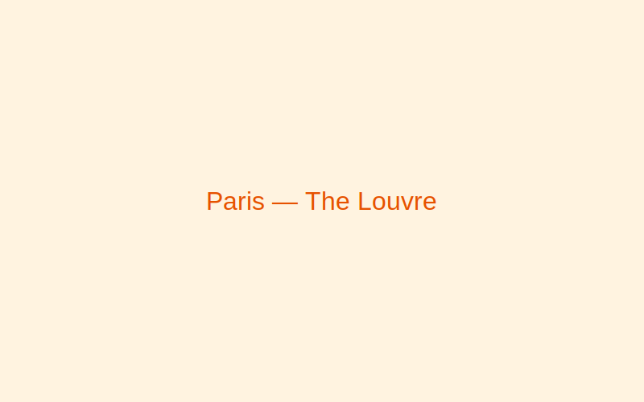
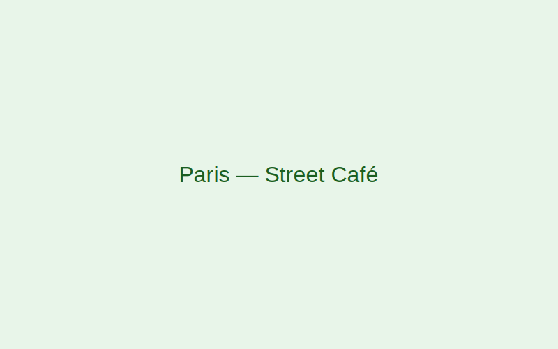
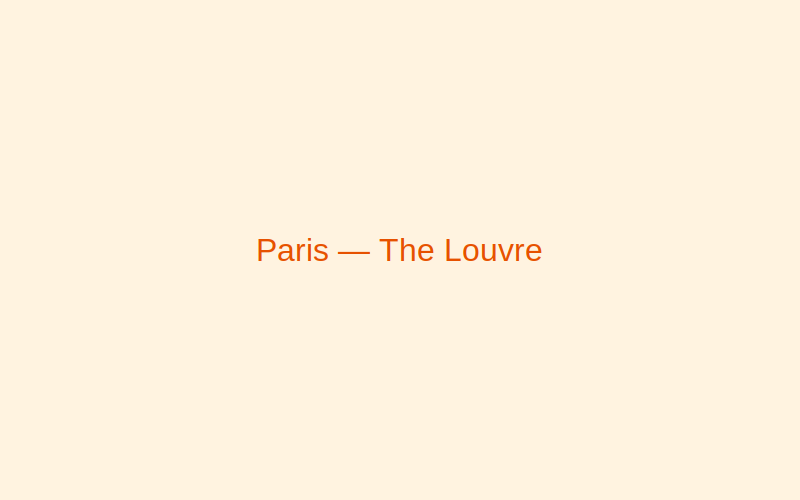
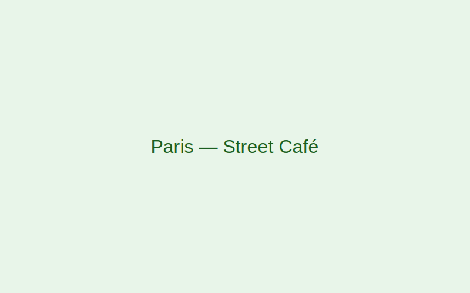

Paris, France
Paris blends timeless elegance with modern creativity. From world-class museums to charming cafés, it's a city that rewards slow exploration.
Gallery
 



Why visit
Art, history, fashion, and food converge in Paris. The city's neighborhoods ("arrondissements") each offer a unique vibe, from bohemian Montmartre to chic Le Marais.
Best time to visit
April–June and September–October offer mild weather and fewer crowds compared to peak summer months.
Top attractions
- The Louvre Museum
- Eiffel Tower & Champ de Mars
- Notre-Dame and Île de la Cité
- Montmartre & Sacré-Cœur
- Musee d'Orsay
Local food & culture
- Croissants
- Flaky, buttery pastries perfect for breakfast.
- Fromage
- France boasts hundreds of cheeses—try Brie, Camembert, and Comté.
- Café Culture
- Slow down at a sidewalk café and people-watch like a local.